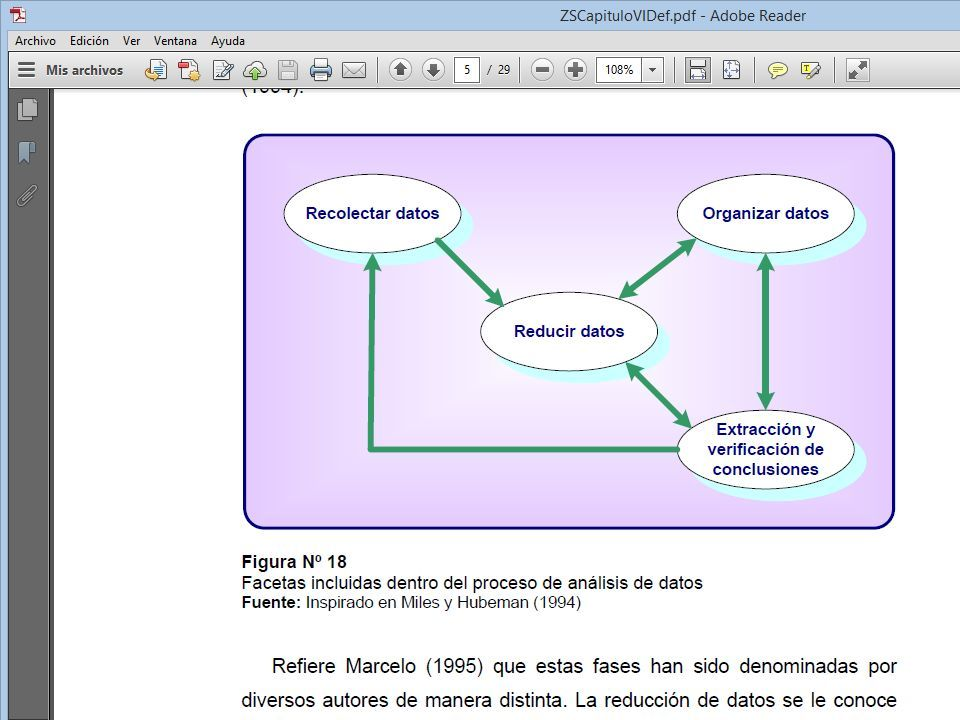
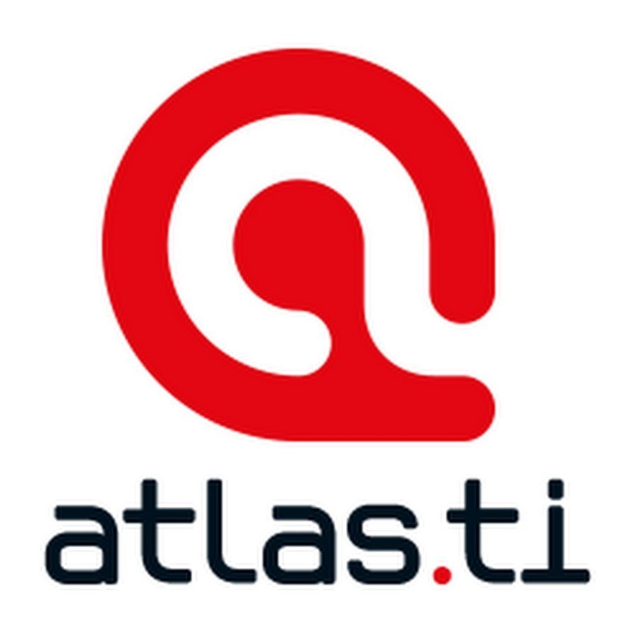

Herramientas de Investigación con Apoyo en las TIC
Hoy día las Tecnologías de la Información y Comunicación (TIC) ofrecen un nuevo abanico de opciones con respecto al aprendizaje y socialización que, constantemente, está evolucionando y mejorándose asímismo. Y uno de los tantos campos que se ve favorecido por estos avances, es el de la investigación; sobre todo con las que nuevas herramientas que facilitan la recolección de la información de manera más fácil y efectiva.
De este modo, cuando hablamos de herramientas en apoyo a la investigación, nos referimos a aquellas aplicaciones informáticas que puedan facilitarnos la tarea de reducir los datos obtenidos en el proceso de la investigación dentro del paradigma cualitativo.
Nud.ist: Esta aplicación soporta los procesos de categorización deductiva e inductiva, lo cual facilita que podamos diseñar un sistema de categorías desarrollado a partir de teorías existentes o ya establecidas en base al objeto de estudio. Como principal ventaja, esta aplicación permite agrupar las categorías y organizarlas en jerarquías, permitiéndole al investigador una mayor facilidad para analizar las similitudes entre múltiples conceptos o categorías.
Nud.istVivo: Es una aplicación algo más avanzada que la anterior encuanto a la recolección de datos cualitativos, asociada a Nud.ist 4.0 y 6.0, siendo la más usada a nivel global. Permite gestionar datos mucho mas profundos, con textos más largos que pueden ser colocados en negritas, cursivas, e incluso añadirle color.
Atlas.ti: Es una aplicación que se usa mayormente en la investigación cualitativa. Su finalidad es ayudar a los investigadores a descubrir y analizar sistemáticamente fenómenos complejos ocultos en el texto o en el multimedia. El programa proporciona herramientas que permiten al usuario localizar el código, y anotar los resultados de datos primarios, para sopesar y evaluar su importancia, y para visualizar las complejas relaciones entre ellos.
Igualmente, permite gestionar y analizar grandes volúmenes de documentos y realiza un seguimiento de todas las notas, anotaciones y códigos en todos los ámbitos que requieren un estudioriguroso. Además, proporciona herramientas de análisis y visualizació diseñadas para abrir nuevas perspectivas interpretativa.
Aquad: una de sus características principal es su facilidad para que el investigador extraiga conclusiones al relacionar las categorías entre ellas, analizando la aparición de ciertas configuraciones típicas y repetitivas en la representación de datos. En el momento que las repeticiones son intuidas, el investigador puede necesitar confirmar el conjunto analizando sistemáticamente los datos o bien comprobando las hipótesis.

Ethnograph: Es una aplicación diseñada para hacer análisis de los datos recogidos durante investigaciones cualitativas, de una manera fácil y eficiente. Permite importar datos de archivos planos o escritos en cualquier procesador de textos, directamente al programa. Esta aplicación facilita la tarea del investigador a lahora de encontrary resaltar segmentos de interés dentro de sus datos, marcarlos con códigos y realizar análisis que pueden ser recuperados para incluirlos en análisis posteriores.